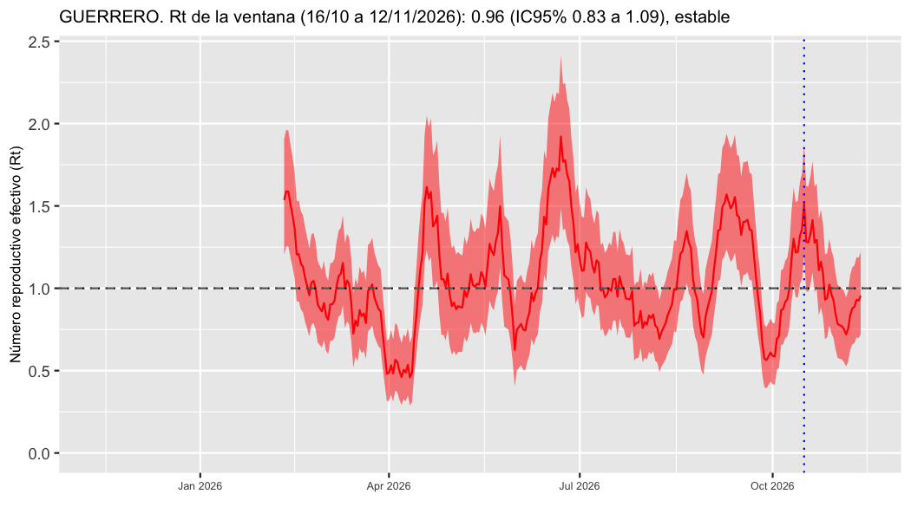
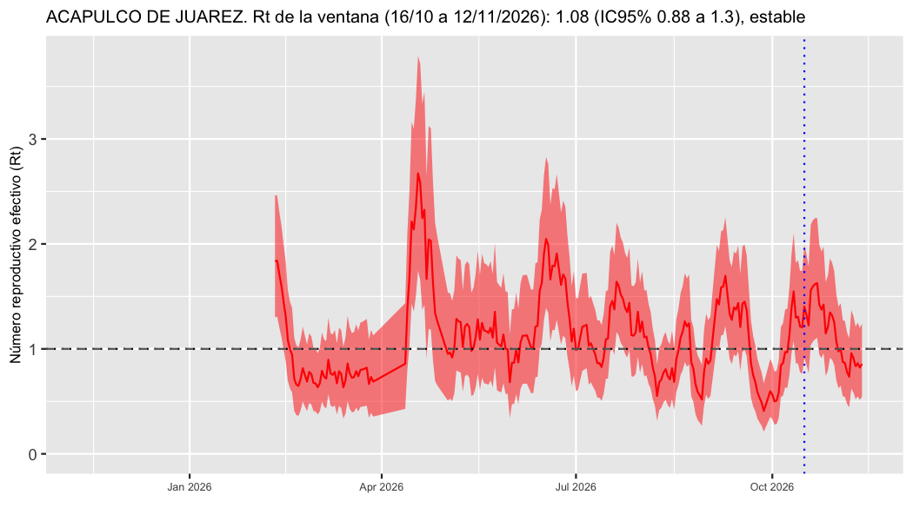

Número reproductivo efectivo (Rt) del dengue
Source:vignettes/numero_reproductivo.Rmd
numero_reproductivo.RmdIntroducción
El número reproductivo efectivo (Rt) es el número promedio de casos nuevos que genera cada caso en un momento dado. Si Rt > 1 la transmisión crece; si Rt < 1, disminuye. Junto con la curva epidémica, indica en qué fase del brote está un área: en ascenso, estable o en descenso.
La función rt_dengue() de densnv estima
el Rt del dengue para el país, un estado, un municipio o una
localidad, con la base del SINAVE. La usa también
mp_active_foci() para diagnosticar el escenario
epidemiológico de una localidad.
Datos
load("dengue_mx_2026.RData")Se necesitan FEC_INI_SIGNOS_SINT,
ESTATUS_CASO y, según el nivel, las claves INEGI del lugar
de reporte (CVE_EDO_REP, CVE_MPO_REP,
CVE_LOC_REP) o de residencia (*_RES). No hace
falta que los casos estén geocodificados.
Cómo se calcula
rt_dengue() usa el método de Cori et al. (2013), paquete
EpiEstim. Para
cada día compara:
- Los casos nuevos de ese día.
-
La infecciosidad de los casos previos: la suma de
los casos de los días anteriores, ponderada por el intervalo
serial (tiempo entre el inicio de síntomas de un caso y el de
los casos que genera). Para el dengue se usa una distribución gamma con
media
mean_si= 21 días y desviación estándarstd_si= 6.1 (incubación intrínseca más extrínseca).
De forma simplificada, Rt ≈ casos nuevos / infecciosidad de los casos previos.
¿Por qué una ventana?
Los conteos diarios son muy variables: un día 1 caso, otro 8, otro 0. Con un solo día, el Rt saltaría sin que la transmisión cambie de verdad. La ventana junta los casos de varios días y supone el Rt constante en ella. La precisión depende del número de casos en la ventana: el coeficiente de variación del Rt es aproximadamente 1/√(casos).
| casos_en_la_ventana | coeficiente_de_variacion |
|---|---|
| 12 | 0.29 |
| 50 | 0.14 |
| 100 | 0.10 |
| 500 | 0.04 |
Hay que equilibrar rapidez y precisión:
- Ventana corta (7 días): detecta pronto los cambios, pero con intervalos anchos.
- Ventana larga (28 días): intervalos angostos, pero tarda en mostrar un cambio de fase. Además, los últimos días de la base están incompletos por el retraso de notificación, y en una ventana larga pesan menos.
rt_dengue() estima dos cosas:
-
La curva: ventanas semanales móviles con al menos
10 casos, que empiezan
mean_si+ 2std_sidías después del inicio de la base (antes no hay historia de casos y el Rt se sobreestima). -
El Rt de la ventana actual: los últimos
window_daysdías hastaref_date, con su intervalo de credibilidad del 95%, que da la fase del brote:- En ascenso: límite inferior > 1.
- Estable: el intervalo incluye 1.
- En descenso: límite superior < 1.
Lugar de reporte o de residencia
El argumento place define con qué lugar se seleccionan
los casos:
-
"REP"(por defecto), lugar de reporte. En las áreas no endémicas (por ejemplo, la Ciudad de México) los casos positivos se reportan en el lugar donde se expusieron, así que el lugar de reporte es el lugar de transmisión. -
"RES", lugar de residencia. En las áreas endémicas casi coincide con el de reporte.
cdmx <- lapply(c("REP", "RES"), function(p)
rt_dengue(dataset = z,
level = "state",
place = p,
cve_edo = "09",
status_caso = c(1, 2),
ref_date = NULL,
period_days = 365,
window_days = 28,
mean_si = 21,
std_si = 6.1,
plot = FALSE))
data.frame(lugar = c("REP", "RES"),
casos = sapply(cdmx, function(r) sum(r$incidencia$I)))
#> lugar casos
#> 1 REP 9
#> 2 RES 41Por nivel geográfico
País
rt_mx <- rt_dengue(dataset = z,
level = "country",
place = "REP",
cve_edo = NULL,
cve_mpo = NULL,
cve_loc = NULL,
status_caso = c(1, 2),
ref_date = NULL,
period_days = 365,
window_days = 28,
mean_si = 21,
std_si = 6.1,
plot = FALSE)
rt_mx$rt_ventana
#> inicio fin casos rt rt_inf rt_sup fase
#> 1 2026-10-17 2026-11-13 10704 1.043418 1.023745 1.063276 En ascenso
rt_mx$plot
plot of chunk pais
Estado: Guerrero
rt_gro <- rt_dengue(dataset = z,
level = "state",
place = "REP",
cve_edo = "12",
status_caso = c(1, 2),
ref_date = NULL,
period_days = 365,
window_days = 28,
mean_si = 21,
std_si = 6.1,
plot = FALSE)
rt_gro$rt_ventana
#> inicio fin casos rt rt_inf rt_sup fase
#> 1 2026-10-16 2026-11-12 216 0.9550919 0.8322346 1.086284 Estable
rt_gro$plot
plot of chunk estado
Municipio: Acapulco de Juárez
rt_aca <- rt_dengue(dataset = z,
level = "municipality",
place = "REP",
cve_edo = "12",
cve_mpo = "001",
status_caso = c(1, 2),
ref_date = NULL,
period_days = 365,
window_days = 28,
mean_si = 21,
std_si = 6.1,
plot = FALSE)
rt_aca$rt_ventana
#> inicio fin casos rt rt_inf rt_sup fase
#> 1 2026-10-16 2026-11-12 101 1.08 0.880611 1.299432 Estable
rt_aca$plot
plot of chunk municipio
Localidad: Mérida
rt_mid <- rt_dengue(dataset = z,
level = "locality",
place = "REP",
cve_edo = "31",
cve_mpo = "050",
cve_loc = "0001",
status_caso = c(1, 2),
ref_date = NULL,
period_days = 365,
window_days = 28,
mean_si = 21,
std_si = 6.1,
plot = FALSE)
rt_mid$rt_ventana
#> inicio fin casos rt rt_inf rt_sup fase
#> 1 2026-10-16 2026-11-12 115 1.188668 0.9822196 1.414516 Estable
rt_mid$plot
plot of chunk localidad
La línea azul marca el inicio de la ventana y la línea discontinua, Rt = 1.
Sensibilidad a la ventana
ventanas <- c(7, 14, 21, 28)
do.call(rbind, lapply(ventanas, function(w){
r <- rt_dengue(dataset = z, level = "locality", place = "REP",
cve_edo = "31", cve_mpo = "050", cve_loc = "0001",
status_caso = c(1, 2), ref_date = NULL, period_days = 365,
window_days = w, mean_si = 21, std_si = 6.1, plot = FALSE)$rt_ventana
data.frame(ventana_dias = w, casos = r$casos, rt = round(r$rt, 2),
ic95 = paste(round(r$rt_inf, 2), "a", round(r$rt_sup, 2)),
ancho = round(r$rt_sup - r$rt_inf, 2), fase = r$fase)
}))
#> ventana_dias casos rt ic95 ancho fase
#> 1 7 37 1.57 1.11 a 2.11 1.00 En ascenso
#> 2 14 68 1.42 1.1 a 1.77 0.67 En ascenso
#> 3 21 89 1.24 1 a 1.51 0.51 Estable
#> 4 28 115 1.19 0.98 a 1.41 0.43 EstableCon ventanas más largas hay más casos y el intervalo es más angosto; el Rt se suaviza.
Sensibilidad al intervalo serial
si <- c(15, 21, 27)
do.call(rbind, lapply(si, function(m){
r <- rt_dengue(dataset = z, level = "locality", place = "REP",
cve_edo = "31", cve_mpo = "050", cve_loc = "0001",
status_caso = c(1, 2), ref_date = NULL, period_days = 365,
window_days = 28, mean_si = m, std_si = 6.1, plot = FALSE)$rt_ventana
data.frame(mean_si = m, rt = round(r$rt, 2),
ic95 = paste(round(r$rt_inf, 2), "a", round(r$rt_sup, 2)),
fase = r$fase)
}))
#> mean_si rt ic95 fase
#> 1 15 1.19 0.98 a 1.42 Estable
#> 2 21 1.19 0.98 a 1.41 Estable
#> 3 27 1.19 0.99 a 1.42 EstableCon un intervalo serial más largo, el Rt se aleja de 1 (en ascenso, más alto; en descenso, más bajo), pero la fase suele mantenerse.
Limitaciones
- Los últimos días de la base están incompletos por el retraso de notificación, lo que baja el Rt de la ventana actual.
- El intervalo serial del dengue varía con la temperatura (incubación extrínseca); 21 días es un valor de referencia.
- Con pocos casos (menos de 50 en el periodo) el Rt es poco confiable; la función lo advierte.
- Los casos importados se cuentan como locales; en áreas no endémicas
conviene
place = "REP".
Referencias
- Cori A, Ferguson NM, Fraser C, Cauchemez S (2013). A new framework and software to estimate time-varying reproduction numbers during epidemics. American Journal of Epidemiology, 178(9), 1505-1512.
- Thompson RN, Stockwin JE, van Gaalen RD, et al. (2019). Improved inference of time-varying reproduction numbers during infectious disease outbreaks. Epidemics, 29, 100356.